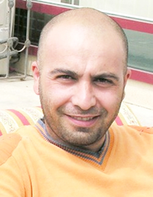

ЧЕТЫРЕ РОМАНТИЧЕСКИХ РАССКАЗА
РАССКАЗ ПЕРВЫЙ. Наши уши привыкли к автоматным очередям, наши глаза привыкли видеть вооруженных людей. Но при этом, мало кто был готов к ракетной атаке. Брат сидел справа у ворот, на газовой трубе. Сестра пошла на занятия фортепиано, в музшколу. Мама была в больнице. Она не лечилась от страшной болезни, просто работала медсестрой. Отец умер два года назад, отравившись водкой. Пребывал в раю или в аду. Разница не существенна. Я же в это время проходил мимо рынка.
Начался ракетный обстрел. Сказали, что это «Кристалл». Ракета по разрушительной силе не очень то и мощная, но ужасно шумная. Страх наполнил мой рот жидкостью непонятного происхождения.
Если не изменяет память, последний «Кристалл» попал в ту часть рынка, где продавали домашних птиц. Все вокруг исчезло в пыли и густом дыме. Люди неистово завопили. В воздухе вихрем закружились перья. Несколько куриц, ухватились за ветки тутовника. Могло показаться, что дерево плодоносит курами. Ну точно как в фильмах про войну.
РАССКАЗ ВТОРОЙ. Он жил один, в четырехстах метрах от перекрестка, у самого входа в деревню, во втором доме справа. В наследство от отца ему достался огромный двор, множество фруктовых деревьев, глубокий колодец и маленький домик.
Советские поэты, говорили о тиранах, деспотах империи все, что о них думали. Делали это мудро, вставляя критику в уста своих персонажей, чаще всего шутов или слабоумных. Он не был ни шутом, ни слабоумным. Он был болен, просто болен. Подтягивал брюки почти до груди. Затягивал ремень так сильно, что казалось, вот-вот лопнет, брюки спустятся ему до колен, и увидев это, сельские бабы, лукаво прикрыв лица яшмой, начнут перешептываться. Он ходил в галошах, заправляя штанины в носки. На свадьбах ловко пританцовывал на одной ноге, а на поминках поедал не менее двух тарелок плова. Круглый год отращивал бороду. Тащил во двор все металлическое: железные банки, найденные в мусоре, дырявые ведра кооператива, валяющиеся на обочине, ржавые глушители и т.п. Могу поклясться, груда металлолома у него во дворе, достигала высоты 20-22 метров. Никто не смел даже приблизиться к этому кургану. Он мог разбить башку любому. Так же решительно расправлялся со всеми, кто пробовал подшутить над ним. Все твердил: «Построю самолет и улечу отсюда. Построить-то построю, но полетит или нет – не знаю. Сделаю, там видно будет …» Ей Богу, так и говорил. Злые языки болтали, что он сошел с ума от слишком большого количества прочитанных книг.
В тот день, когда армяне напали на деревню, все убежали и спаслись. Только он один попал в плен. Ну точно как в фильмах про войну.
РАССКАЗ ТРЕТИЙ. Эту историю я узнал от участника карабахской войны, Рея Керимоглу. Ниже привожу его рассказ:
Наш маленький штаб, располагался в тихом селе, в котором оставалось пять-шесть пожилых жителей, не имевших родственников в ближайших районах.
Одинокий старик, продавал на дому семечки, штучные сигареты, иранские жвачки. Он был глуховат. Мы, солдаты, чтобы купить у него что-нибудь, не стучались к нему и не звали. Все равно бы не услышал. Мы просто открывали очередь из автоматов, и старик выходил. Такие налаженные торговые отношения, устраивали как нас, так и его.
Неожиданно для всех армяне напали на село. Началась перестрелка. Услышав звуки множества автоматов, старик выбежал во двор. Подумал, что на этот раз желающих купить у него семечки, штучные сигареты и жвачку стало больше в несколько раз. Пуля поразила его прямо во дворе, перед домом. Ну точно как в фильмах про войну.
РАССКАЗ ЧЕТВЕРТЫЙ И ПОСЛЕДНИЙ. Я не был знаком с ним лично. Но слышал уйму анекдотов про него. Мало кто знал, как его имя, все звали его по фамилии. Имел привычку издеваться над муллами на поминках. На шумных застольях, веселил сельскую буржуазию. Ни разу в жизни не выходил за пределы своего села. Не служил в советской армии. Ругался матом, но никого не обижала его нецензурщина. В любой компании, где он появлялся, все непременно улыбались. Он был, настоящим сельским классиком. Люди кормили, подвозили на машине, одевали его. И все бесплатно. Вдобавок даже деньги в карман клали. Короче говоря, был знаменитостью в селе. Я говорил с последним человеком, который видел его живым. Вот, что он рассказал мне:
«Покидаю я значит село. В машине почти не осталось горючего. Мигает красный индикатор. Все водители, у которых был бензин, давно уже уехали. За холмами идет перестрелка. Гляжу, сидит на тротуаре, тихо себе курит. Обычно поэты, в поисках рифмы, так курят. Он не был похож на спешащего человека. Взгляд устремлен вдаль, лицо задумчивое. Выбросил окурок, закурил вторую сигарету. Ну точно как в фильмах про войну.
- Вставай. Чего расселся? Бензин в баке заканчивается. Не поедешь со мной, попадешь в плен.
- Ты видишь вон тот мост?
- Вижу.
- За этим мостом ни одна собака меня не знает. Куда же я поеду?»
Сеймур Байджан
17-02-08
Начался ракетный обстрел. Сказали, что это «Кристалл». Ракета по разрушительной силе не очень то и мощная, но ужасно шумная. Страх наполнил мой рот жидкостью непонятного происхождения.
Если не изменяет память, последний «Кристалл» попал в ту часть рынка, где продавали домашних птиц. Все вокруг исчезло в пыли и густом дыме. Люди неистово завопили. В воздухе вихрем закружились перья. Несколько куриц, ухватились за ветки тутовника. Могло показаться, что дерево плодоносит курами. Ну точно как в фильмах про войну.
РАССКАЗ ВТОРОЙ. Он жил один, в четырехстах метрах от перекрестка, у самого входа в деревню, во втором доме справа. В наследство от отца ему достался огромный двор, множество фруктовых деревьев, глубокий колодец и маленький домик.
Советские поэты, говорили о тиранах, деспотах империи все, что о них думали. Делали это мудро, вставляя критику в уста своих персонажей, чаще всего шутов или слабоумных. Он не был ни шутом, ни слабоумным. Он был болен, просто болен. Подтягивал брюки почти до груди. Затягивал ремень так сильно, что казалось, вот-вот лопнет, брюки спустятся ему до колен, и увидев это, сельские бабы, лукаво прикрыв лица яшмой, начнут перешептываться. Он ходил в галошах, заправляя штанины в носки. На свадьбах ловко пританцовывал на одной ноге, а на поминках поедал не менее двух тарелок плова. Круглый год отращивал бороду. Тащил во двор все металлическое: железные банки, найденные в мусоре, дырявые ведра кооператива, валяющиеся на обочине, ржавые глушители и т.п. Могу поклясться, груда металлолома у него во дворе, достигала высоты 20-22 метров. Никто не смел даже приблизиться к этому кургану. Он мог разбить башку любому. Так же решительно расправлялся со всеми, кто пробовал подшутить над ним. Все твердил: «Построю самолет и улечу отсюда. Построить-то построю, но полетит или нет – не знаю. Сделаю, там видно будет …» Ей Богу, так и говорил. Злые языки болтали, что он сошел с ума от слишком большого количества прочитанных книг.
В тот день, когда армяне напали на деревню, все убежали и спаслись. Только он один попал в плен. Ну точно как в фильмах про войну.
РАССКАЗ ТРЕТИЙ. Эту историю я узнал от участника карабахской войны, Рея Керимоглу. Ниже привожу его рассказ:
Наш маленький штаб, располагался в тихом селе, в котором оставалось пять-шесть пожилых жителей, не имевших родственников в ближайших районах.
Одинокий старик, продавал на дому семечки, штучные сигареты, иранские жвачки. Он был глуховат. Мы, солдаты, чтобы купить у него что-нибудь, не стучались к нему и не звали. Все равно бы не услышал. Мы просто открывали очередь из автоматов, и старик выходил. Такие налаженные торговые отношения, устраивали как нас, так и его.
Неожиданно для всех армяне напали на село. Началась перестрелка. Услышав звуки множества автоматов, старик выбежал во двор. Подумал, что на этот раз желающих купить у него семечки, штучные сигареты и жвачку стало больше в несколько раз. Пуля поразила его прямо во дворе, перед домом. Ну точно как в фильмах про войну.
РАССКАЗ ЧЕТВЕРТЫЙ И ПОСЛЕДНИЙ. Я не был знаком с ним лично. Но слышал уйму анекдотов про него. Мало кто знал, как его имя, все звали его по фамилии. Имел привычку издеваться над муллами на поминках. На шумных застольях, веселил сельскую буржуазию. Ни разу в жизни не выходил за пределы своего села. Не служил в советской армии. Ругался матом, но никого не обижала его нецензурщина. В любой компании, где он появлялся, все непременно улыбались. Он был, настоящим сельским классиком. Люди кормили, подвозили на машине, одевали его. И все бесплатно. Вдобавок даже деньги в карман клали. Короче говоря, был знаменитостью в селе. Я говорил с последним человеком, который видел его живым. Вот, что он рассказал мне:
«Покидаю я значит село. В машине почти не осталось горючего. Мигает красный индикатор. Все водители, у которых был бензин, давно уже уехали. За холмами идет перестрелка. Гляжу, сидит на тротуаре, тихо себе курит. Обычно поэты, в поисках рифмы, так курят. Он не был похож на спешащего человека. Взгляд устремлен вдаль, лицо задумчивое. Выбросил окурок, закурил вторую сигарету. Ну точно как в фильмах про войну.
- Вставай. Чего расселся? Бензин в баке заканчивается. Не поедешь со мной, попадешь в плен.
- Ты видишь вон тот мост?
- Вижу.
- За этим мостом ни одна собака меня не знает. Куда же я поеду?»
Сеймур Байджан
17-02-08
Кавказский Центр Миротворческих Инициатив
© Ассоциация Текали - info@southcaucasus.com